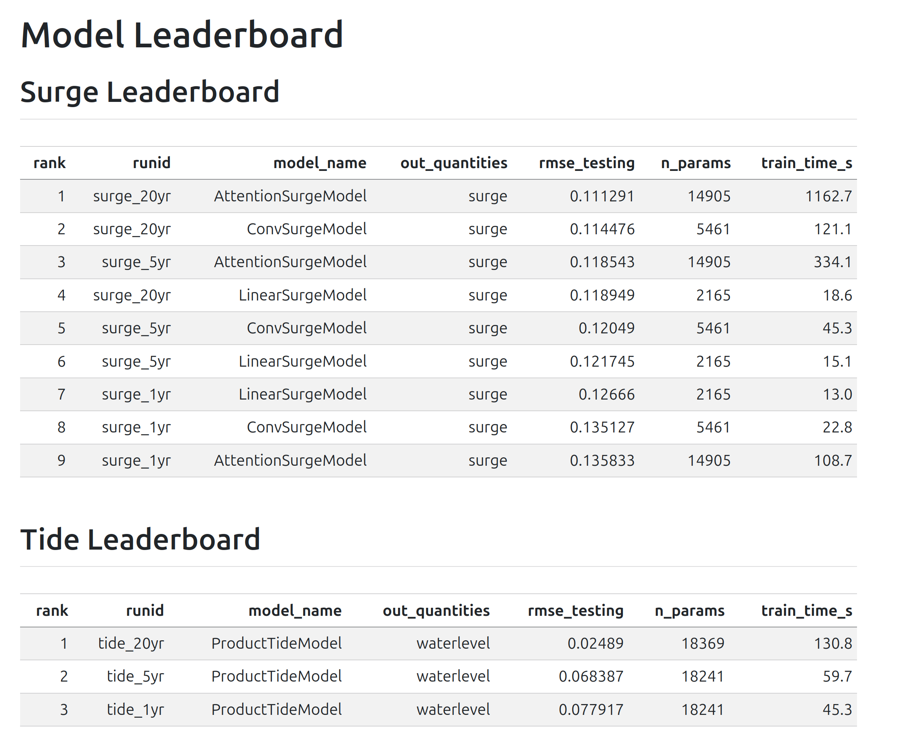
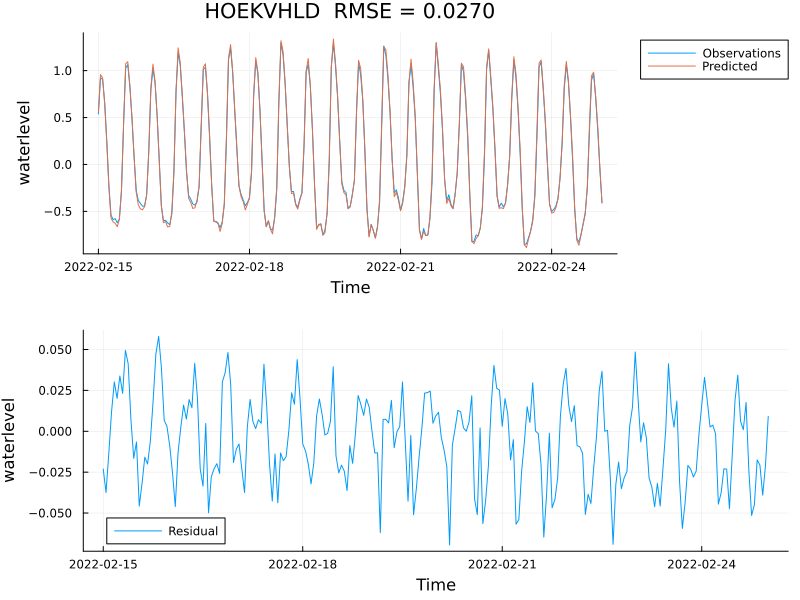
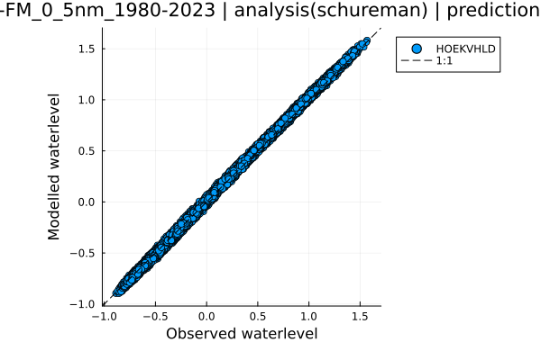
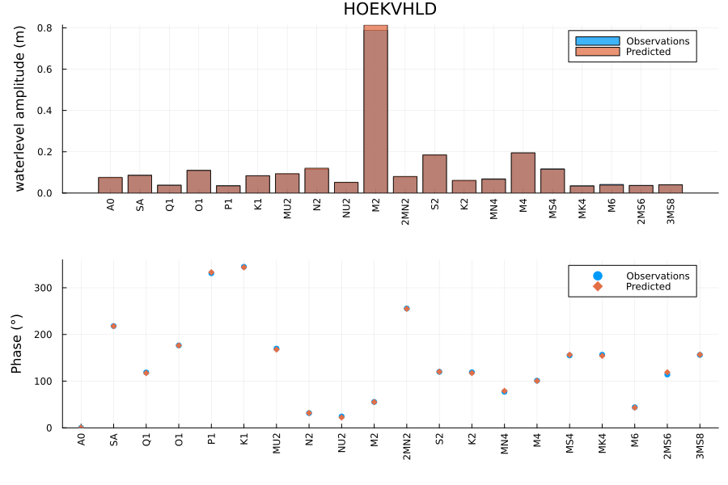
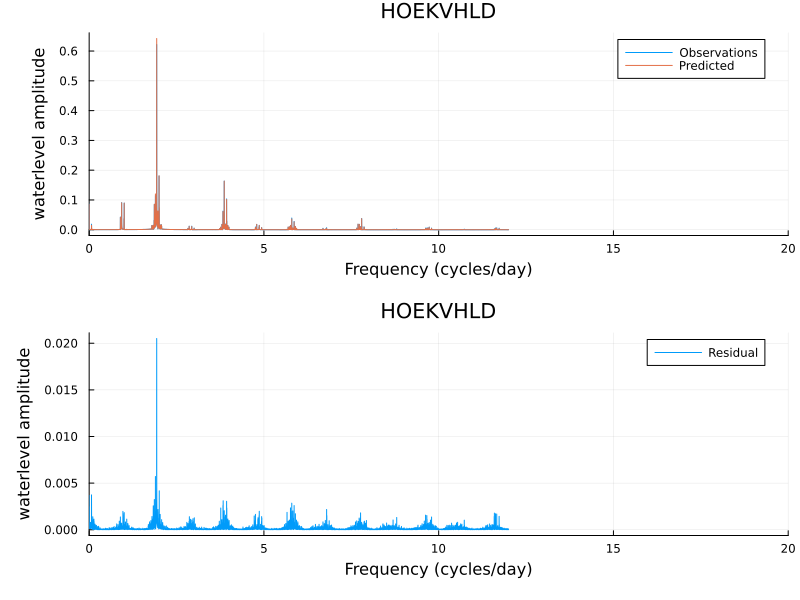
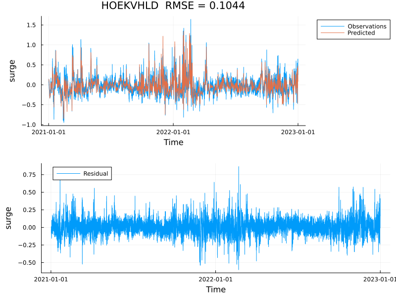
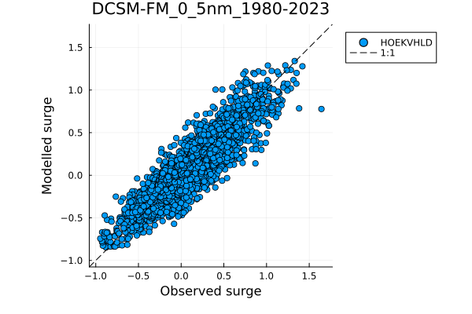
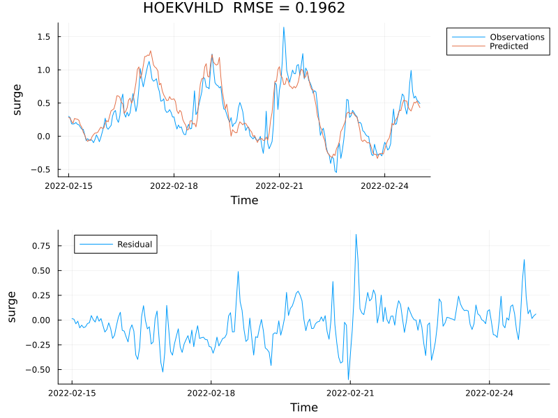
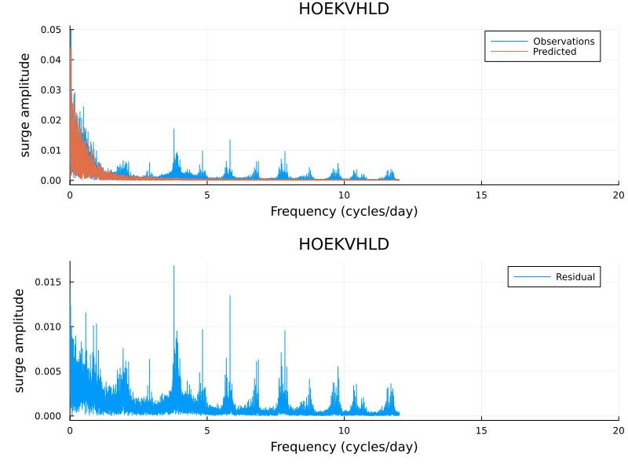

ML-based water level forecasting
tides, surge, waves, and their interaction
2026-07-29
Predicting ocean water levels at points
The goal: accurate, fast water level forecasts at coastal stations
- Needed for flood warnings, port operations, and coastal management
- Traditional approach: run a full 3-D numerical model (expensive)
- Alternative: train an ML model on output from a numerical reanalysis (DCSM-FM)
This project: a Julia package (AIHydroPoints) for ML-based point forecasting
The traditional approach: numerical models
Numerical models (e.g. Delft3D-FM) solve the shallow-water equations on a grid
| Strengths | Physics-based; works anywhere on the grid |
| Limitations | Slow; output at a point is a by-product of a large spatial solve |
ML models learn the input → point-output mapping directly from reanalysis data
Four phenomena: tides, surge, waves, and their interaction
\[\eta_\text{total} = \eta_\text{tide} + \eta_\text{surge} + \eta_\text{wave} + \eta_\text{interaction}\]
| Component | Driver | Status |
|---|---|---|
| Tides | Astronomical forcing | baseline done |
| Storm surge | Wind stress + pressure | baseline done |
| Waves | Wind fields | planned |
| Interaction | Nonlinear tide–surge coupling | in progress |
Inputs and outputs
5 output stations — Dutch North Sea coast
Vlissingen · Hoek van Holland · Den Helder · Harlingen · Delfzijl
Inputs vary by component
| Component | Input variables | # Input locations | # Lags |
|---|---|---|---|
| Surge | Wind stress (x, y) + pressure | 9 | 16 h |
| Tide | Time + selected constituents | — | — |
| Waves | Wind speed + direction | 9 | 16 h |
| Interaction | Tide + surge predictions | 5 | 16 h |
All inputs come from ERA5 reanalysis (hourly, ~0.25° grid).
Tides
Tides are almost entirely predictable from the positions of the Moon and Sun.
Model input: time only (no atmospheric data needed)
Converts datetime → 6 Doodson astronomical components
Components: lunar hour angle T, solar declination S, solar hour H, lunar longitude P, lunar node N, solar perigee P₁
ProductTideModel— learned amplitude/phase per constituentDeepONetTideModel— deep operator network
Tides contribute the dominant signal (~80% of variance at most stations).
Storm surge
Physical mechanism: wind pushes water toward (or away from) the coast; low pressure raises sea level
Model input: ERA5 wind stress (x, y) + mean sea-level pressure at 9 grid points, with 16-hour lag window
LinearSurgeModel— single dense layer; 2,165 parametersConvSurgeModel— 1-D convolution over time lags; 5,461 parametersAttentionSurgeModel— self-attention over lag window
Waves — sea-state from wind fields
Wave statistics (significant wave height, period) driven by local and upstream wind.
Model input: wind speed + direction at ERA5 grid points + one-hot station encoding
Models available
ConvWaveModel— convolutional over spatial/temporal lagsDeepONetWaveModel— operator network
Wave baselines are planned; results not yet in leaderboard.
Tide–surge interaction — why 1 + 1 ≠ 2
In shallow water, tides and surges are not independent:
- A surge arriving at low tide propagates differently than at high tide
- Bottom friction is nonlinear: \(\tau_b \propto |\mathbf{u}|\mathbf{u}\)
- The residual (total − tide − surge) can reach tens of centimetres
Model input: predicted tide + surge at all stations, 16-hour lag window
Active area of work — convergence issues under investigation.
Training a model
format_version = 2
[run_info]
runid = "example"
description = "Convolutional surge model: 2010 train, 2011 validation, 2012 test."
[model_settings]
model_name = "ConvSurgeModel"
nlags = 16
[train_settings]
nepochs = 50
learning_rate = 1.0e-3
early_stopping_epochs = 5
[data_settings.model_io]
input = ["stress_x", "stress_y", "pressure"]
target = ["surge"]
[[data_settings.files]]
path = "surge_schureman_2010.nc"
split = "training"
variables = ["surge"]
[[data_settings.files]]
path = "era5_wind_stress_2010.jld2"
split = "training"
variables = ["stress_x", "stress_y", "pressure"]Leaderboard: comparing models

Tide performance — Hoek van Holland


ProductTideModeltrained on 20 yr of DCSM-FM data; RMSE = 0.025 m at Hoek van Holland- Scatter plot nearly perfect — tidal signal is highly predictable from astronomical forcing alone
Tide performance — tidal constituents


- Constituent amplitudes and phases match well; dominant M2 constituent correctly captured
- Using 20 years of data the nodal factor (~18.6 yr cycle) can also be estimated
Surge performance — Hoek van Holland


ConvSurgeModeltrained on 20 yr; RMSE = 0.114 m on test period (2021–2022)- Scatter shows more spread than tides — surge is inherently harder to predict
Surge performance — frequency content


- Training period series (RMSE = 0.196 m) shows large events well captured, some misses on peaks
- FFT residual shows energy remaining at tidal frequencies — signature of tide–surge interaction not yet modelled
Open question: the interaction model
The interaction residual (total − tide − surge) is small but matters for extremes.
Challenge: the signal is ~5–20 cm, highly nonlinear, and correlated with both tide phase and surge amplitude.
Current status
ConvInteractionModelandProductInteractionModelimplemented and passing unit tests- Training does not converge — loss plateaus near the mean
- Likely causes: insufficient signal-to-noise ratio, or missing input features
Next steps: diagnose convergence, try predicting on synthetic interaction data first.
A shared ML architecture for all components
All models share the same abstract interface (AbstractFluxModel):
AbstractModel
└── AbstractFluxModel
├── AbstractSurgeModel → Linear / Conv / Attention
├── AbstractTideModel → Product / DeepONet
├── AbstractWaveModel → Conv / DeepONet
└── AbstractInteractionModel → Conv / ProductEvery model implements three customization points:
preprocess— build input tensor fromDict{String, TimeSeries}forward— Flux neural network passpostprocess!— write predictions back into output dict
Generic predict, save_params, load_params! are inherited for free.
What’s working, what’s next
Working
- Full model hierarchy: 12 concrete models across 4 families
- 543 unit tests pass; all training scripts smoke-tested
- TOML-driven training/prediction pipeline
- Surge and tide baselines on 1 yr / 5 yr / 20 yr training data
- Automatic leaderboard generation
In progress
- Interaction model convergence
- Wave model baselines
- Scatter plot improvements
Planned
- Real-time forecast scripts
- Scale to more stations
- Online demo environment